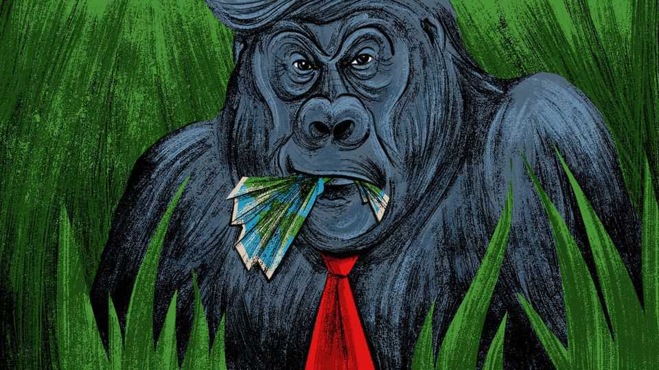

As his presidency flounders, Trump is more dangerous than ever
Forget lame ducks. America’s president will defend his dominance like an ageing silverback gorilla

Aug 27th 2026
IS DONALD Trump becoming a lame duck? As his troubles multiply at home and abroad, the prospect of dealing with a hobbled American president is enough to make foes and friends swoon with relief.
For the hard men who rule China, Iran and other American adversaries, to survive Mr Trump’s various maximum-pressure campaigns would be a propaganda win for the ages—even if those same autocrats never quite shared the Trump-horror that consumes liberal democracies. Deep down, Xi Jinping and his friends believe that all occupants of the White House are selfish, America First bullies, but some hide it better than Mr Trump does.
For their part, many allies and partners would like to see Mr Trump limp to the end of his presidency. That does not mean that leaders in Berlin, Riyadh or Tokyo are rooting for Mr Trump to lose his war in Iran, or for him to admit defeat in his trade confrontation with China. The enfeebling of America would frighten allies in Europe, Asia or the Middle East, who are years away, at best, from being able to defend themselves without their longtime great-power protector. But a fuming, friendless Mr Trump, so weakened by his own blunders and by plunging approval ratings that he retreats to the gilded fastness of his White House, there to tinker with plans for his ballroom and memorial arch? That is a vision that many governments would cheer. They would be especially relieved if a Republican wipeout in November’s midterms loosened Mr Trump’s iron grip on his own party in Congress, and imposes some constraints on his monarchical rule.
Alas, anyone hoping to see Mr Trump chastened by failure is misjudging the man. Political wisdom may soon declare Mr Trump the lamest of ducks, as his wishes are challenged by Congress, or as financial markets pass harsh and costly judgments on MAGA-nomics. Mr Trump may not care. Let little people worry about the Republican Party, public policy or America’s budget deficit. As long as Mr Trump is still commander-in-chief, he can secure a place in history by remaking, or breaking, the world.
Foreign governments should stop dreaming of ducks. Instead, they should study mountain gorillas, and the violence of which an ageing silverback male is capable when it senses its time is up. This should worry allies in particular. Ageing silverbacks are conspicuously vicious towards members of the band that they lead. They do not hesitate to unleash canine teeth and brawny limbs on subordinate animals who step out of line. In contrast, when silverbacks encounter powerful males from rival bands—a bare-chested Vladimir Putin springs to mind, for some reason—their preference is often to avoid actual combat in favour of noisy dominance displays. With blustering Truth Social posts unavailable as an outlet, silverbacks must content themselves with chest-beating, mock charges and the snapping of branches off trees.
In Mr Trump’s first term, a sense of grievance lay at the heart of his America First worldview. Mr Trump grumbled that for decades America had been ripped off by allies and trade partners alike. Typically, he blamed America’s post-1945 ruling elites, who were too incompetent or craven to use the country’s unrivalled wealth and power to advance their national interests. Worse, they embroiled America in forever wars in a naive belief that they could make the world a kindlier place. He maintained that tone of grievance throughout his first term.
The second Trump presidency has seen grievance combined with talk of quasi-imperialist conquest. Upon returning to office in 2025, Mr Trump declared earlier presidents “stupid” for giving up American control of Greenland after the second world war, or for handing the Panama Canal to Panama, and pledged to take both back. This was not mere posturing. The tone was set in January after American troops snatched Venezuela’s leader from his home, allowing Mr Trump to hand-pick a more pliant ruler for that oil-rich country. “American dominance in the western hemisphere will never be questioned again,” he crowed.
Now, in his sixth year as president, a third goal has joined grievance and dominance as a guiding principle of Mr Trump’s statecraft. That goal is vengeance. A desire for revenge helps explain Mr Trump’s fateful decision to join Israel in attacking Iran six months ago. “Regime Change”, a startlingly well-briefed book about the second Trump presidency by two White House correspondents, Maggie Haberman and Jonathan Swan, describes meetings in which Mr Trump savoured the chance to kill Iran’s top leaders and destroy their armed forces, whether or not this led to a better Iran. The Iranian regime had humiliated successive American presidents and tried to assassinate Mr Trump. Now he was being offered a chance to make them pay. A public aim of the war might have been the toppling of Iran’s despotic government. But the book describes Mr Trump, in a closed-door meeting with his close aides, dismissing Iranian regime change as “their problem”. Whether he meant the Iranian people’s problem or Israel’s, nobody quite knew. Punishment, though, was indisputably his intent.
Now, as the Strait of Hormuz remains closed, much of Mr Trump’s wrath is aimed at allies and partners in Europe, Asia and the Arab world, whom he blames for failing to help him open that waterway. If victory remains elusive, expect Mr Trump to stay in revenge mode. The list of plausible targets is long. Members of the NATO alliance, notably Canada and Denmark, Ukraine, South Korea and Cuba have all angered Mr Trump over the years. Big beasts such as Mr Xi have less to fear.
Mr Trump, who sees himself as an alpha male to his core, was never likely to limp quietly from office. Now that his dominance is threatened, the world will find him more disruptive than ever. ■